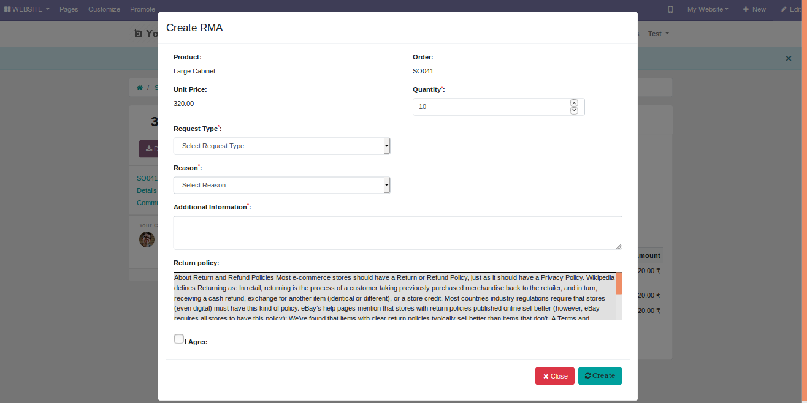
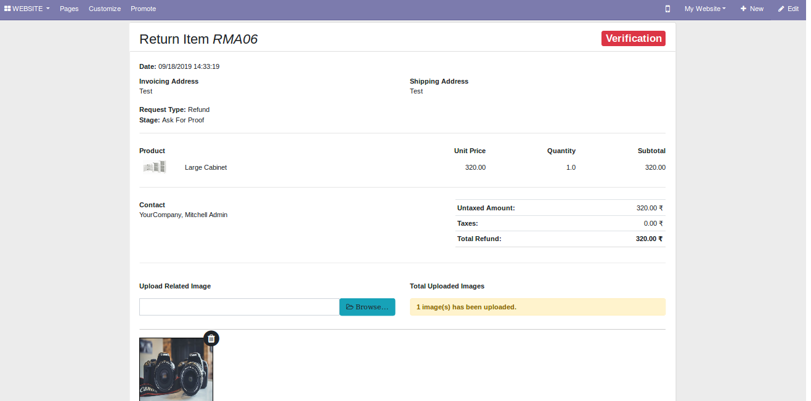
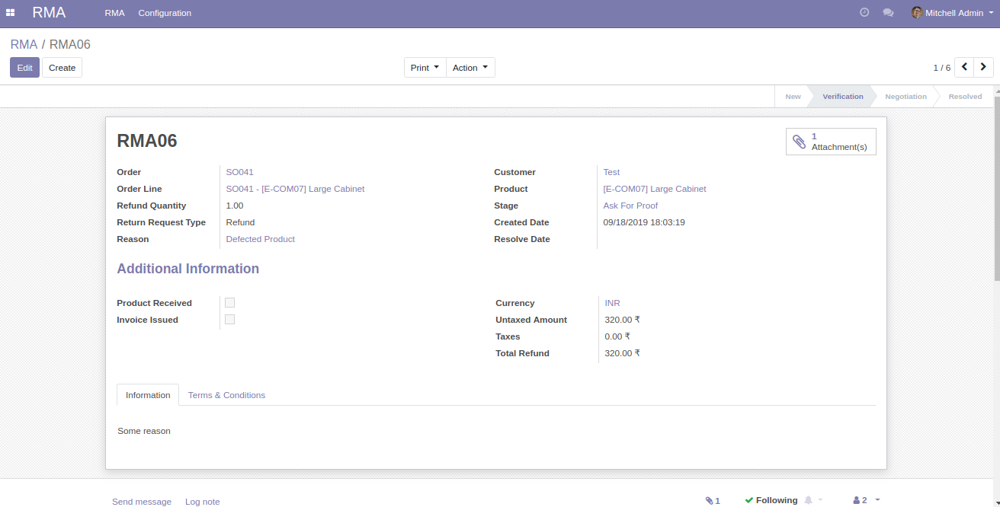
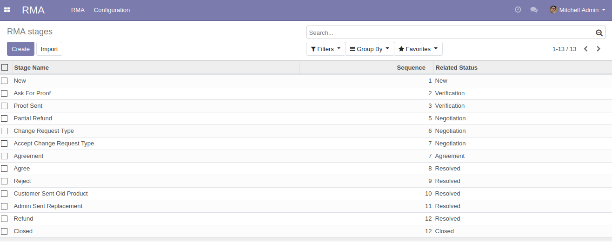
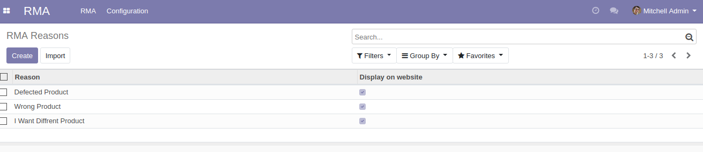
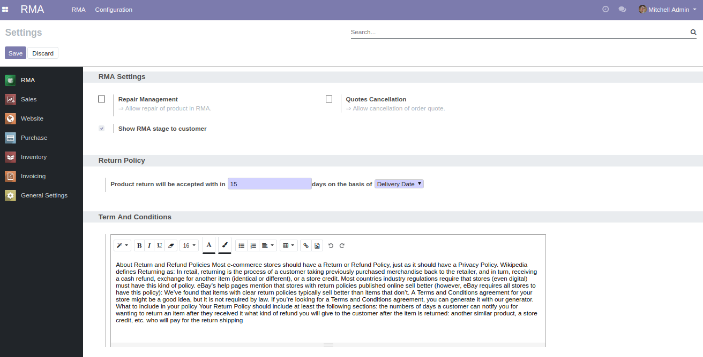

Return Merchandise Authorization (RMA)
Easy Returns and exchange with Odoo RMA
HIGHLIGHTS FEATURES
Manage Returns, Exchange & Repairs
Create RMA request from Website Or Odoo backend
Set and update RMA request status in Odoo
Monitor the Progress in Odoo itself
The Purpose of the RMA in Odoo?
Because Returns are unavoidable. Returns and exchanges cannot be averted in any business
Odoo Return Merchandise Authorization (RMA) is the tool that essentially streamlines the process of the processing returns and exchanges in your Odoo store.
A unique RMA is assigned to each returned product for tracking, testing and authorizing appropriate action to serve the customer better.
And as this product makes its way through different departments such as defect testing, quality check, issuing return refund or exchange, the number helps to maintain the individuality of the product.
Odoo RMA not only speeds up the process of managing returns and exchanges but organizes your whole reverse logistics department to eliminate delays, mismanagement, and errors.
It prevents the mishandling, misplacement, and error in processing the product for return or exchange. Thus, streamlining the entire process.
How does the Odoo RMA module works?
The RMA (Return Merchandise Authorization) request for a product can be generated by the customer from website end or by Odoo user in Odoo backend. The request is set to the appropriate RMA stage - submitted, new, etc.
An RMA number is assigned to the product.
The best part of the module is, the Odoo users can just mark the current status of the product in the Odoo with a single click. So the other users can pick up from where the last department left to take the product to the next inspection.
A number of Odoo RMA stages can be created as per requirements, by the user to track the progress of the customer's request.
Once the product is processed, the exchange or return or refund can be issued and RMA closed.
RMA Section in Customer Website Portal
The customers can create RMA request for their purchased products through his/her website account portal.
The customer can view the current status of his/her RMA request directly from his/her website account.
The module also facilitates Odoo User and customer to communicate with each other for any queries, requirements or updates which further bridges the communication gap between the two parties.
Key Features
Here are the key features of Odoo RMA
Added Odoo RMA menu
A separate space to manage returns and exchanges in Odoo.
The Odoo RMA menu is added to keep things organized on your end.
Designed for Both Website & Backend
The customer can generate RMA requests from their website accounts.
Alternatively, the Odoo user can create an RMA request in the Odoo backend.
Simple RMA Form
Easily legible odoo RMA form is designed for customers' convenience.
A unique RMA# (number) is assigned to each RMA request.
The RMA stages are visible on the RMA form for the customers.
Define Odoo RMA Stages
Designate the progress of Odoo RMA process with stages.
Create representative stages for different product inspections in your RMA process.
Separate individual stages can be created for returns & exchanges respectively.
Set RMA Reasons
Create a variety of RMA reasons for the customer to choose from.
The RMA reasons are used by customers to fill RMA form.
Add apt reasons to better understand the customer's issues.
Customer-Odoo User Communication
The customer and Odoo user can chat with each other through the Odoo chatter.
Both the parties can exchange queries and update to fast track the RMA process.
The chat facility curtails any delay due to communications.
RMA options in Customer website account
The customer's website account now allows creating the RMA request.
He/she can create and view the status of his/her Odoo RMA request.
Define your Return & Exchange policy
The user can add return and exchange policies to the RMA form.
They are displayed to the customer while creating the RMA request.
Similarly, the terms & conditions can also be displayed in the RMA form.
Simple Odoo RMA Form / Create RMA request
{kind=link}
RMA form is filled to create an RMA request.
{kind=link}
Consequently, a unique RMA number is provided to each RMA request for easy tracking.
RMA form in customer website account
{kind=link}
{kind=link}
{kind=link}
{kind=link}
Details of the RMA requests
{kind=link}
Odoo RMA Stages
{kind=link}
The stages are used to show the status of the product under inspection to process RMA.
Define different stages according to your Returns & exchange process.
The customer view the current stage of his RMA request in his/her account.
Reasons For RMA
{kind=link}
Define RMA reasons to be filled by the customer while creating the RMA request.
Different reasons can be added to the Odoo for different circumstances for returns and excnage of a product.
Configuration Settings
{kind=link}
Support
Get Immediate support for any query

You will get 90 days free support for any doubt, queries, and bug fixing (excluding data recovery) or any type of issue related to this module.
Create TicketWe use UVdesk helpdesk app for Managing Queries & Support